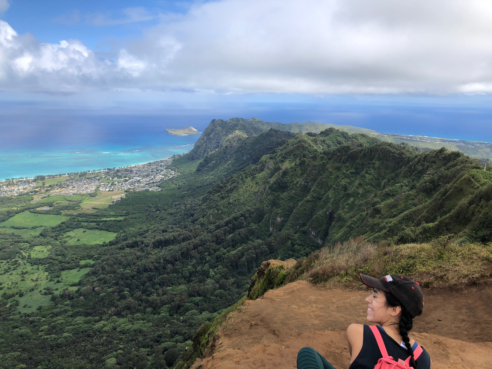
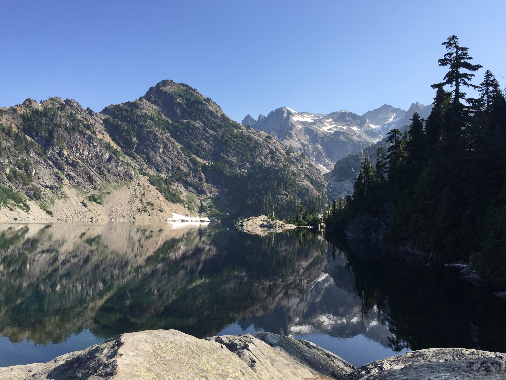
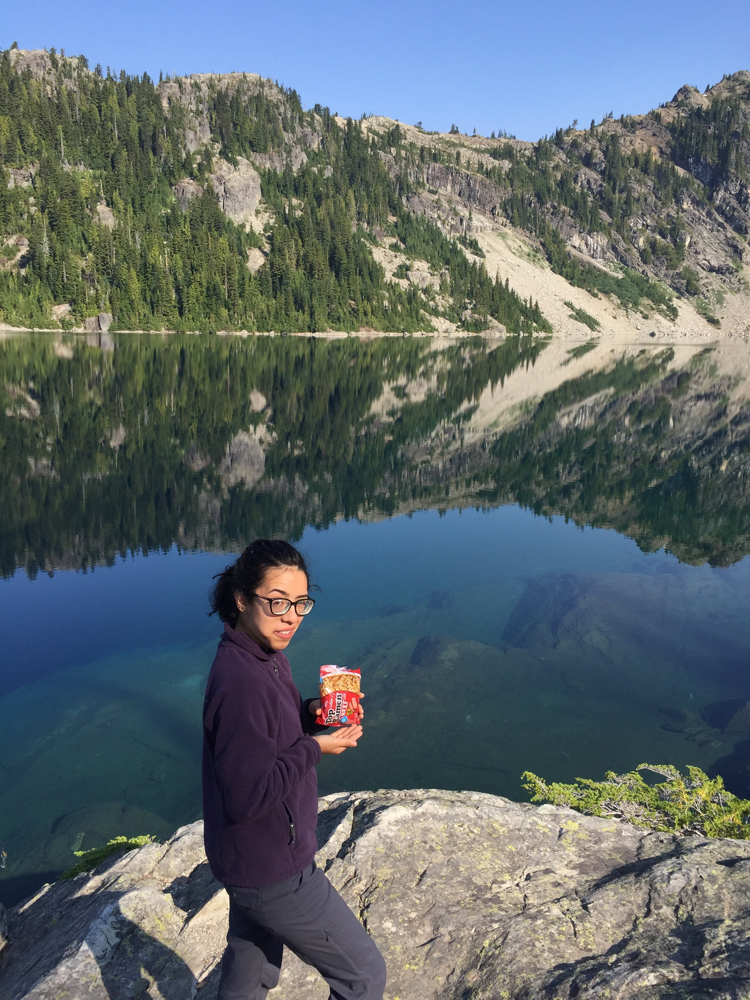
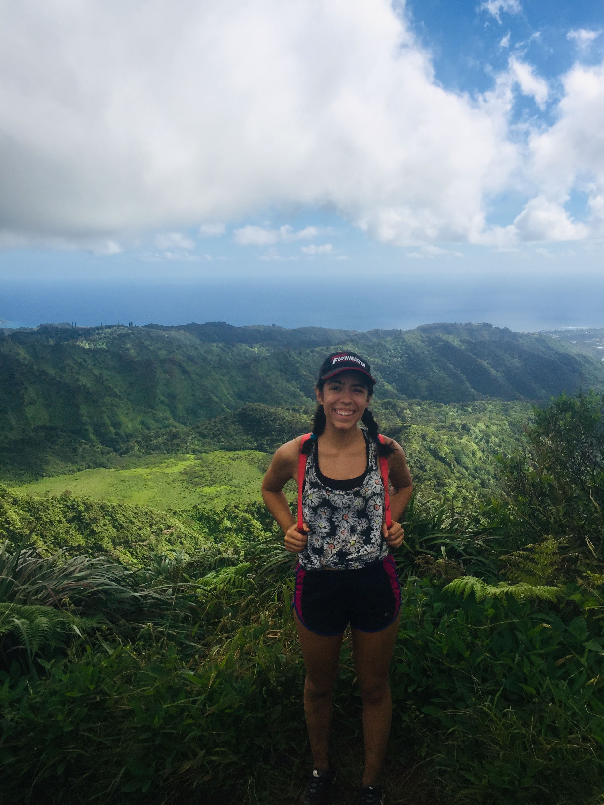
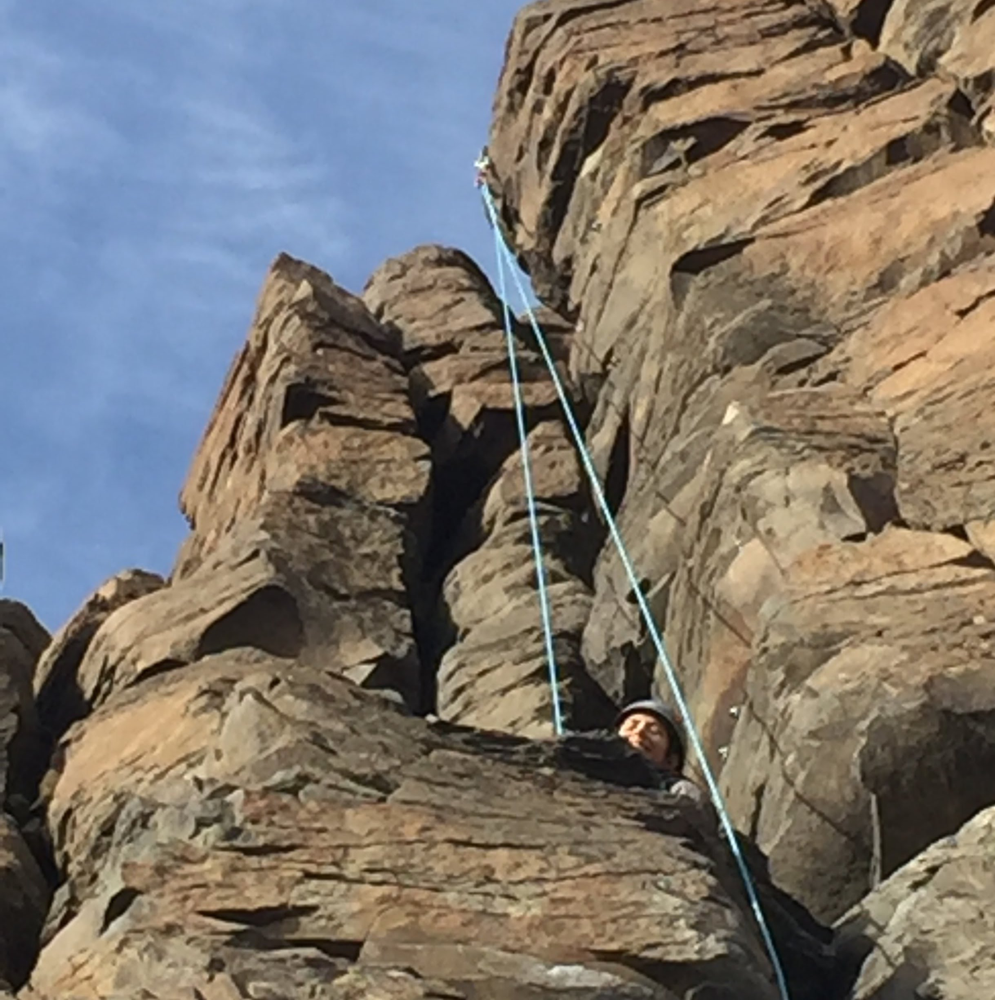
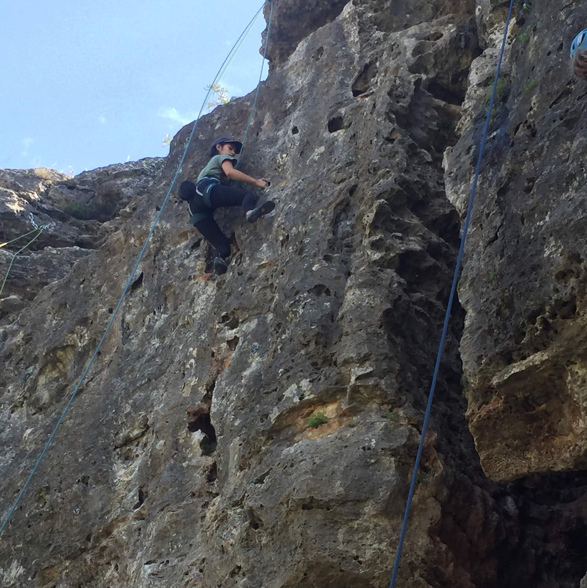
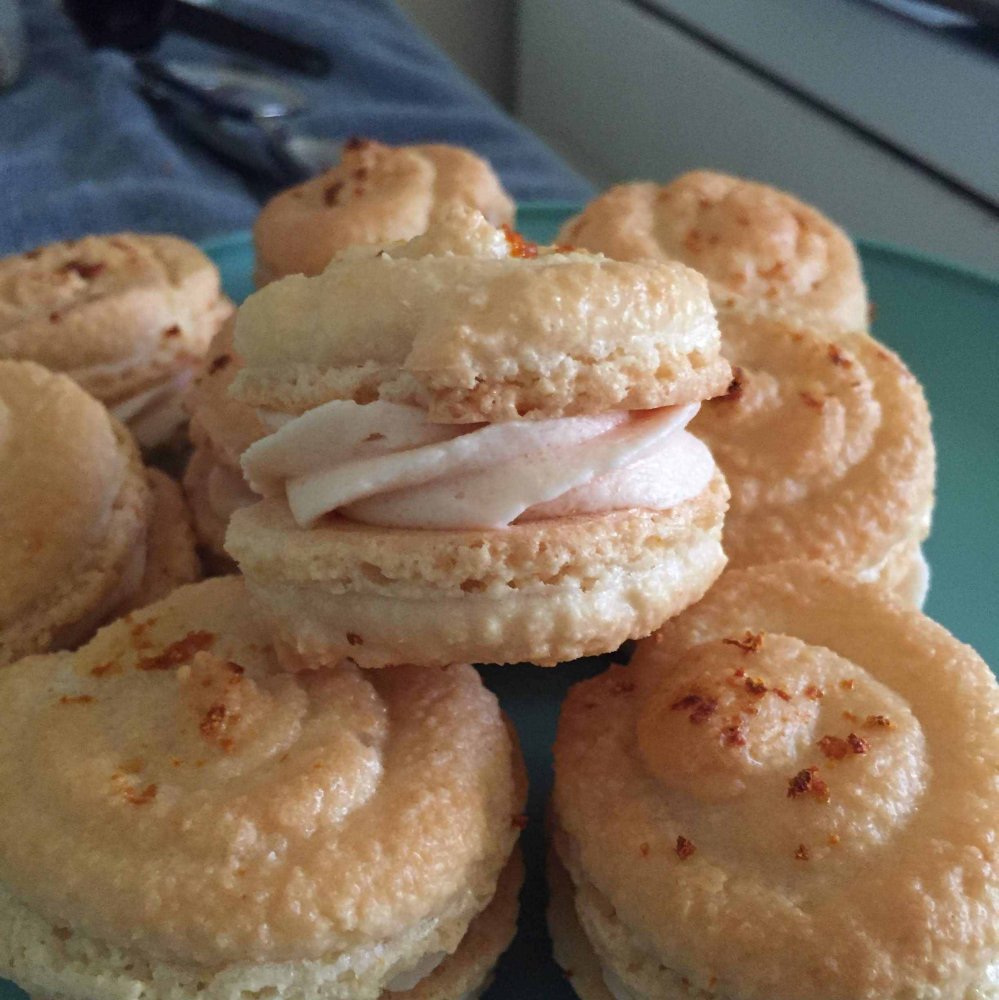
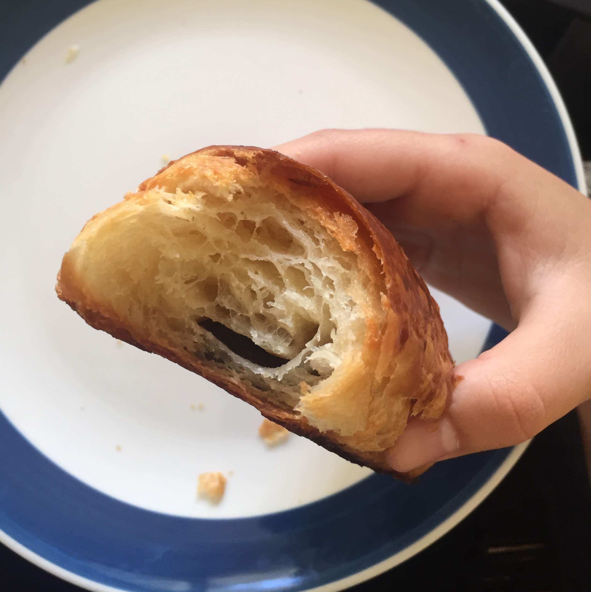

My life outside of astronomy
I currently spend most of the year living in sunny Honolulu, Hawai'i. When I have free time, I try to be outside as much as possible. Currently, my favorite things to do outside of research are hiking, climbing, baking, and painting. During breaks/periods of time when I don't have class, I live in Austin, Texas, where I work remotely on my graduate research and spend all of my free time rock climbing.
I came a little late to the hiking party (I started seriously hiking during my final year of undergrad) but since then I've been hooked. Here are some of my favorite hikes I've gone on.




Featuring the breathtaking ridgeline of Kuliouou, the top of Mt. Olympus on Oahu, the glassy surface of Spade Lake in Washington, and the ramen packet that saved my life after hiking 17 miles.
As mentioned earlier I also love to rock climb. I picked up the sport during my last year of undergrad and I've had the climbing bug ever since. Here are some of the few shots of me climbing. The one on the left is in Vantage, Washington and the one on the right is in Austin, Texas.


My roommate here in Hawai'i and I have recently been trying to bake more. Inspired by an old Guy Fieri cookbook, we have named our house Flavortown and have spent most weekends making elaborate food. Here are a few of our recent creations.


You can find more of our food adventures on our instagram @flavortown808.